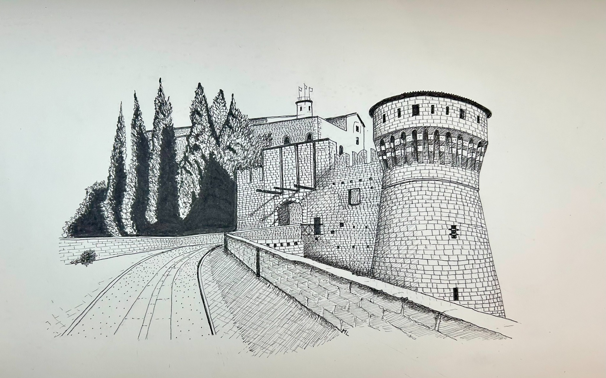

Questa galleria raccoglie una selezione di opere a china dedicate a paesaggi, architetture storiche e composizioni simboliche.
Veduta dell'Isola di Loreto, Lago d'Iseo.

Veduta del Castello di Brescia.

Gardone Riviera.

Con il Pizzo Badile Camuno.

Composizione simbolica.